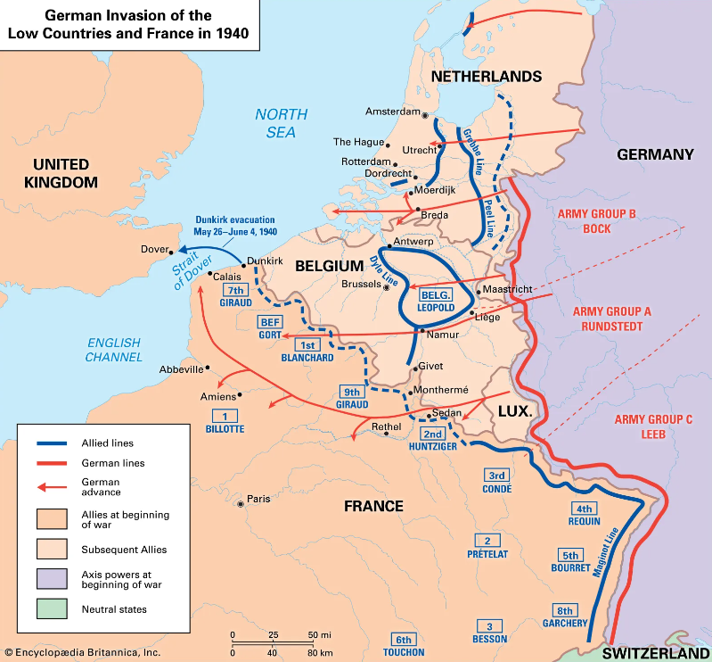

Introduction
Nazi Germany was born from Adolf Hitler's political party, which appealed to the racist and fascist thoughts of the German people. Their goal was to eliminate enemies of the Third Reich, mainly Jews. Hitler started the Second World War in pursuit of rebuilding the great Germany and ending the Treaty of Versailles, which had insulted Germany in the First World War. During the 6 year campaign, Germany implemented a new innovative war tactic called Blitzkrieg, or Lightning War. This method consisted of the coordinated use of air, armored, and ground forces.
How Blitzkrieg Was Born
The ideas behind Blitzkrieg were generated during the First World War when all sides were attempting to come up with ways to break the trench deadlock. Reestablishing fast-moving warfare was important to Germany because the Versailles Treaty had limited the German army to a maximum of 100,000 men or 10 divisions, which was a small number compared to the French army's 85 divisions. They needed to come up with new ways to use their forces more efficiently, as they couldn't go back to the attrition of the first world war with limited manpower.
The German army sent various platoons to fight in the Spanish civil war and trained using cars with cardboard detailing to simulate tanks because they weren't allowed to have tanks. The most efficient idea was to upscale the training of each rank, so, for example, every NCO would be trained as an officer, and every junior officer was trained as a staff officer. This would build a small but powerful mobile army capable of adapting to different situations.
How Blitzkrieg Works
The concept behind Blitzkrieg is to win by not fighting. First, you identify the weak points in the enemy lines, quickly and relentlessly break through these lines, and finally disrupt the enemy's rear end. You are winning by dislocating the forces and not their destruction. However, don't be fooled by this remark. The Blitzkrieg advancement brings bloodbaths and destruction. For example, the city of Warsaw was devastated, and 90% of the buildings were destroyed.
Three Key Elements of a Successful Blitzkrieg
-
Speed of Movement: The fundamental objective of Blitzkrieg is to keep moving without stopping. If you pause, you will become entangled in an attritional battle, giving the enemy an opportunity to regroup and respond to your attack. To maintain consistent forward momentum, you require good cover ahead of you. It is often thought that Germany had a very large army, but in reality, only about 15% of it was mechanized. As a result, the German army positioned its attacks in a spearhead formation, with the mechanized panzer forces leading the way. While the panzer forces blitzed through enemy lines, the Luftwaffe provided support with precision bombings, making it challenging for the enemy to react. Overall, the German army was weaker than its adversaries, but at the spearhead, they always managed to outperform their enemies.
-
Speed of Decision Making: The primary goal of Blitzkrieg is to identify the weak point in the enemy line, apply mechanized pressure, and break through to the rear areas. To achieve this, you must be able to act flexibly, quickly, and change the focus of your attack without delay. Junior commanders were trained to make critical decisions in the heat of battle. For instance, if a platoon was ordered to attack a heavily fortified area but the flanks had weaker defenses, the platoon could quickly change its target, destroy alternative outposts, and continue advancing. Decisions were made within minutes, while the French command took days.
-
Overconfident Enemy: The Allied troops were trained to fight a static, ground-holding battle — similar to the First World War. They were not encouraged to innovate since they had won the previous war. This meant they were not investing in radio communications, relying instead on telephone lines. The German army only needed to break the lines, attack the rear, and sever communication — rendering army groups incommunicado, creating a sea of indecision and eventually paralyzing the enemy.

As we can appreciate in the above map, you can see the specific mobilization that the German army executed through Belgium, the Netherlands, and France. Note how far German forces moved after crushing enemy lines. This campaign saw audacious applications of air power and airborne infantry to overcome fixed fortifications that were believed by the defenders to be impregnable.